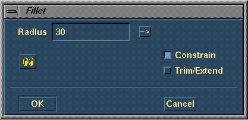
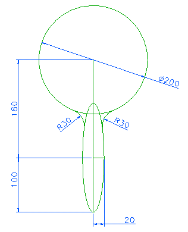
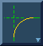
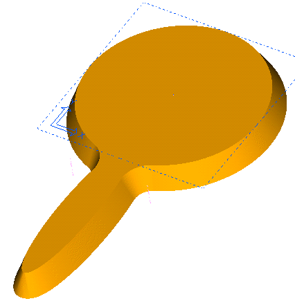

| Next Page | Previous Page | First Page |



Fillet between the circle and ellipse R30, No Trim/Extend.

Extrude (Stop at Intersections) 25mm
draft angle 25 degrees, extrude
downwards.

Delete the Bottom Surface.

Modify the Extrude distance to 15mm. Update.